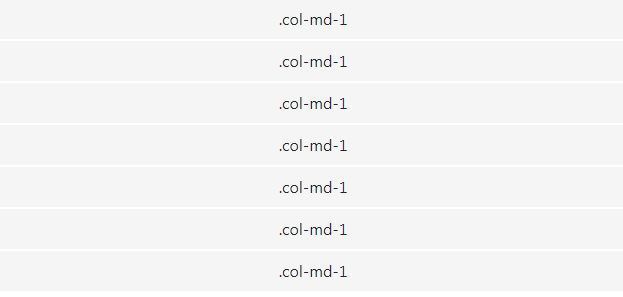
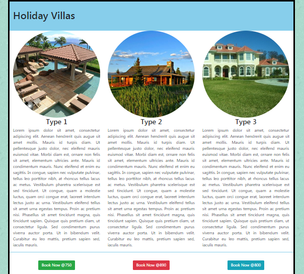

Objective
This lab looks at Bootstrap 4 Containers, and the Bootstrap 4 Grid System.
Bootstrap 4 Containers
Containers provide the foundation for page layout.
Bootstrap requires a containing element to wrap elements and contain its grid system (more on the grid system next). Bootstrap's container classes were created specifically for this purpose.
Bootstrap containers can be either fixed or fluid.
Fixed Container
A fixed container is a (responsive) fixed width container. As you resize your browser, its width remains intact, until it passes a certain breakpoint, at which time it will resize to the new width for that break point.
<div class="container">
...
</div>Fluid Container
A fluid container spans the full width of the viewport. It will expand and contract fluidly as you resize the browser. This is in contrast to the fixed width container which will appear to "jump" to the new size as you pass a given break point.
<div class="container-fluid">
...
</div>While you can create Bootstrap pages without containers, they are required when using the Bootstrap grid system.
Bootstrap Grid System
Grid systems enable you to create advanced layouts using rows and columns. The Bootstrap grid system can have up to 12 columns, and you can specify how these columns scale for different viewport sizes.
Here's an example of a Bootstrap grid:

The numbers at the end of each class name represent the number of columns that the column spans. So .col-sm-1 spans one column and .col-sm-8 spans eight. The sm means that the column span applies to small devices and everything above. You can also use md, lg, and xl for medium, large, and extra large.
Extra small devices are catered for by omitting the middle abbreviation. For example .col-8 spans eight columns on extra small devices and up (in other words, all devices).
Stacked to Horizontal
The following example uses the same markup, but this time we use md for medium. This means that, if the viewport is smaller than medium (i.e. less than 768 pixels), the cells in the grid will be stacked on top of each other, and each cell will take up the full width.
If you are viewing this on a wide screen, this example might not look any different to the previous one. However, if you resize your browser down, the cells will eventually shift into the stacked position (and the previous example will remain intact).

Grid Sizes
The grid tier options are as follows:
- Extra small (xs) - below 576px
- Small (sm) - between 576px and 768px
- Medium (md) - between 768px and 992px
- Large (lg) - between 992px and 1200px
- Extra Large (xl) - over 1200px
The following table shows how different grid options work with different viewport sizes.

Grid Facts
Containers
Grids should be placed within a container (i.e. using either .container class or the .container-fluid class) for proper padding and alignment.
Rows & Columns
Rows contain one or more columns. Columns contain the content. Only columns can be immediate children of rows.
Padding
Columns contain padding. However, the padding on the first and last columns is offset by a negative margin on the row.
More than 12 Columns per Row?
If more than 12 columns are placed in a row, the columns will wrap to a new line. That is, columns will wrap as a group. So for example, if a row contains a col-md-10 and a col-md-3, then the whole col-md-3 will wrap to the new line.
Less than 12 Columns per Row?
You don't have to use up all 12 columns. You can use any number of columns up to 12 (before it will wrap to the next line).
For example, you could have a row where the total column count spans say, 3 columns.
Grid Classes
Grid classes apply to devices with screen widths greater than or equal to the breakpoint sizes, and override grid classes targeted at smaller devices. So using any .col-sm-* class will affect not only small viewports, but also medium, large, and extra large (unless there's also a col-md-* and/or col-lg-* and/or col-xl-* present).
Multiple Classes
You can use multiple class sizes for a given element. For example, you could use class="col-sm-10 col-md-6" to specify 10 columns for small viewports and 6 columns for medium and large viewports.
Using the Grid System
Recall that this is how the Bootstrap grid system works:
- Rows must be placed within a container for proper alignment and padding.
- Use rows to create horizontal groups of columns.
- Content should be placed within columns, and only columns may be immediate children of rows.
- Predefined grid classes like .row and .col-sm-4 are available for quickly making grid layouts.
- Columns create gutters (gaps between column content) via padding. That padding is offset in rows for the first and last column via negative margin on .rows.
- Grid columns are created by specifying the number of twelve available columns you wish to span.
Example One
In the following example, we have 3 columns of data on the web page. Firstly, there is a container class which has a default width (and which we will customise). Then there are a row of siblings. In our case, there are three div elements that are contained inside a single row. So we start a new row by adding a new div with class row. The row now has three more div tags with the class col-md-4. The number 4 in the class tells us that it occupies four grids. So three sibling divs with four grids each will occupy 12 grids, which is perfectly fine.
<div class="row">
<div class="col-md-4">
<h2>Frontend</h2>
<p>...</p>
</div>
<div class="col-md-4">
<h2>Serverside</h2>
<p>...</p>
</div>
<div class="col-md-4">
<h2>Databases</h2>
<p>...</p>
</div>
</div>A feature of the Bootstrap 4 grid is the auto-layout mode. It lets developers leave out the size of columns, making them automatically distribute the space in that row. Sizeless columns share the available space equally, always filling up the entire row.
Because the 3 column widths are the same you can leave out the number and just use col-md and Bootstrap will determine you want 3 columns of equal size (4) as in the following example.
<div class="row">
<div class="col-md">
<h2>Frontend</h2>
<p>...</p>
</div>
<div class="col-md">
<h2>Serverside</h2>
<p>...</p>
</div>
<div class="col-md">
<h2>Databases</h2>
<p>...</p>
</div>
</div>Example One and Example Two are further examples of using auto-layout. View the source of each of the pages to see the column sizes.
Example Two
You can also create equal-width columns that span multiple rows by inserting a .w-100 where you want the columns to break to a new line as in the following example.
<div class="row">
<div class="col-md">col</div>
<div class="col-md">col</div>
<div class="w-100"></div>
<div class="col-md">col</div>
<div class="col-md">col</div>
<div class="w-100"></div>
<div class="col-md">col</div>
<div class="col-md">col</div>
</div>Example Three
If we want a column to be bigger or smaller than the other columns in a row, we can do that with a .col-md-size class. In this example, we again have 3 columns of data but each has a different size.
<div class="row">
<div class="col-md-3">
<h2>Frontend</h2>
<p>...</p>
</div>
<div class="col-md-4">
<h2>Serverside</h2>
<p>...</p>
</div>
<div class="col-md-5">
<h2>Databases</h2>
<p>...</p>
</div>
</div>You could leave the size out of one of the column width specifications and the browser would determine its size based on the total adding up to 12.
<div class="row">
<div class="col-md-3">
<h2>Frontend</h2>
<p>...</p>
</div>
<div class="col-md-4">
<h2>Serverside</h2>
<p>...</p>
</div>
<div class="col-md">
<h2>Databases</h2>
<p>...</p>
</div>
</div>More on using the Grid
Using Multiple Classes
When laying out pages you can design the page to look different on different viewports. You can use multiple class sizes for a given element. For example, you could use class="col-sm-10 col-md-6" to specify 10 columns for small viewports and 6 columns for medium and large viewports.
The following example illustrates different navigation and content sizes for separate viewports.
<div class="row">
<nav class="col-md-2 col-sm-3 col-4">
...
</nav>
<section class="col-md-10 col-sm-9 col-8">
...
</section>
</div>Use of Gutters
Recall that columns create gutters (gaps between column content) via padding. That padding is offset in rows for the first and last column via negative margin on .rows.
The following example illustrates the use of gutters (space between the images).
<div class="row">
<div class="col-6 col-sm-3 kitten-box"><img src="images/kitten.jpg" alt="kitten" class="img-fluid"></div>
<div class="col-6 col-sm-3 kitten-box"><img src="images/kitten.jpg" alt="kitten" class="img-fluid"></div>
<div class="col-6 col-sm-3 kitten-box"><img src="images/kitten.jpg" alt="kitten" class="img-fluid"></div>
<div class="col-6 col-sm-3 kitten-box"><img src="images/kitten.jpg" alt="kitten" class="img-fluid"></div>
</div>Whereas in the following example, the gutters are removed and there is no padding (space between the images).
<div class="row no-gutters">
<div class="col-6 col-sm-3 kitten-box"><img src="images/kitten.jpg" alt="kitten" class="img-fluid"></div>
<div class="col-6 col-sm-3 kitten-box"><img src="images/kitten.jpg" alt="kitten" class="img-fluid"></div>
<div class="col-6 col-sm-3 kitten-box"><img src="images/kitten.jpg" alt="kitten" class="img-fluid"></div>
<div class="col-6 col-sm-3 kitten-box"><img src="images/kitten.jpg" alt="kitten" class="img-fluid"></div>
</div>Note: In the above examples, we have included a class class="img-fluid", this will ensure that the image is responsive and resize for different viewports (if required). Other classes we can use with images are:
- rounded, and
- rounded-circle.
More on images later...
Grid Exercises
- Download, extract and open the Lab01 folder in Week09.
- A web page has been created for you, add Bootstrap 4 code that will size the screen for very small viewports (and upwards) as follows:

You will notice that when you resize the browser to small viewport size, the 4 columns of text appear very narrow.
- Adjust the code for the 4 columns such that the columns of text are size 6 on very small viewports, and size 3 on small screens (and upwards).

Grid Exercise Two
- Download, extract and open the Lab02 folder in Week09.
- A web page has been created for you, add 3 images from the images folder (feat1.jpg, feat2.jpg, and feat3.jpg), which are responsive and displayed as a circle.
- Add Bootstrap 4 code that will size the screen for very small viewports (and upwards) as follows:

- The headings (Type 1, Type 2, and Type 3) are centered.
- The paragraphs are justified.
- In the footer, add 3 buttons (Go to Buttons).